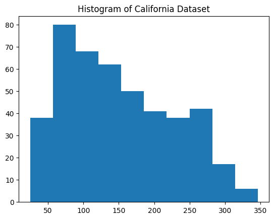
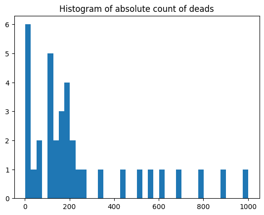
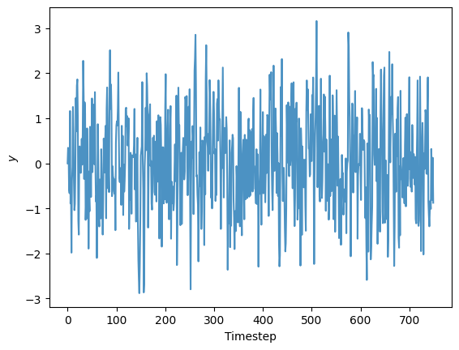

The Multivariate Covariance Generalized Linear Model (MCGLM) is a universalization of the classic statistical model GLM, widening for multivariate and non-independent response fitting. Due to its pliancy and explicit specification, this unified model can support many statistical analyses on a wide variety of data and distinct traits. Aiming to foment the pervasiveness of statistical analysis with MCGLM support, this essay instills MCGLM and its comprehensive new Python library - the mcglm. The library is hosted on PyPI and can be installed with the aid of some Python library manager, such as pip. https://pypi.org/project/mcglm/.
Introduction
Dated at the beginning of the 19th century and controversial about actual authorship, the least squares method established an optimization proposal [1]. According to the Gauss-Markov theorem [2], the resulting estimates are optimal and unbiased under linear conditions of continuous values. This optimization method is leveraged by linear regression, one of the primordial statistical models [3], [4]. A linear regression associates a response variable to a group of covariates by employing a linear operation on regression parameters [5]. Three main assumptions for linear regression are linearity, independent realizations of the response variable, and a gaussian homoscedastic error with a zero mean. Aiming to generalize it, some subsequential statistical proposals expanded these assumptions.
The Generalized Linear Model (GLM) [6] generalizes the gaussian assumption of linear regression to some models of the exponential family [7]; The Generalized Additive Model (GAM) [8] manages regression by the sum of smooth operations on covariates; The Generalized Estimating Equations (GEE) [9] applies the quasi-likelihood estimating functions to adjust longitudinal data; Copulas [10], [11] and Mixed Models [12] are consolidated models that can fit non-independent response data, to cite a few. Amid the most recent postulations resides the family of Multivariate Covariance Generalized Linear Models (MCGLM).
The Multivariate Covariance Generalized Linear Model (MCGLM) [13] universalizes GLM by allowing the multivariate analysis of non-independent responses, such as longitudinal and spatial data. This versatility is the main trait of MCGLM; it stems from two-moment assumptions and the specification of its five fundamental components: linear predictor via design matrix, link function, variance function, covariance link function, and the linear matrix predictor through Z matrices. The model allows the assessment of regression coefficients and dispersion parameters, hypothesis tests, goodness-of-fit measurements, and correlation coefficients between outcome variables.
Statistical models and a brief literary review.
To develop intuition on statistical models, we dissect classical linear regression. According to McCullagh, P and Nelder, J.A, 1989 in their fantastic book “Generalized Linear Models”, yet rephrased by myself, an enthusiast disciple, a linear regression can be decomposed into two components: systematic and random parts.
Assuming an outcome variable \(\boldsymbol{y}\) with \(n\) components considered independent realizations of a random variable \(\boldsymbol{Y}\). There is a vector \(\boldsymbol{\mu}\) which holds the mean parameters of those realizations. The systematic part of the model specifies the vector \(\boldsymbol{\mu}\) by employing a linear operation between regression parameters \(\beta_0,...,\beta_p\) and the covariates. The mathematical notation for the systematic part:
where \(x_{ij}\) is the value of the jth covariate for observation \(i\).
Moreover, as the random part, we assume independence and constant variance of errors. These errors follow a Gaussian distribution with mean 0 and constant variance \(\sigma^2\) - giving to linear regression the adjective Homoscedasticity.
For a simple linear regression, the model graphically shapes as the image below:
Linear Regression
As a statistical model, linear regression associates a response variable with at least one explanatory variable.
In 1972, Nelder and Wedderburn went a step further in unifying the theory of statistical modeling and, in particular, regression models, publishing their article on generalized linear models (GLM).
In the context of GLM, each component of the random variable \(Y\) assumes a distribution in the exponential family, in which the probability or density function takes the form.
GLM relies on three components: A design matrix with covariates, a link function, some distribution of exponential family or a variance function. The usual choices for the link and variance functions.
The maximum-likelihood estimator leverages the underlying distribution to find regression coefficients and dispersion estimates that maximize the product of likelihood. Therefore, two assumptions of GLM are: linearity upon the link function and random variable \(Y\) is independently distributed as some exponential family distribution. The figure below illustrates the Binomial and Poisson models.
Binomial Regression
Poisson Regression
Stepping ahead two years, Wedderburn, one of the authors of GLM, published in 1974 one of the most iconic papers of history. “Quasi-Likelihood Functions, Generalized Linear Models, and the Gauss-Newton Method”. He proposed a relative likelihood estimator, the quasi-likelihood, which does not rely on a distribution model, yet provides asymptotically unbiased and consistent estimators. As long as statisticians cannot know the distribution upfront, the quasi-likelihood play an essential role in statistical models. The quasi-score is an Estimating Equation for quasi-likelihood functions.
In 1986, Liang and Zeger published the paper “Longitudinal data analysis using generalized linear models”, which establishes an extension of Generalized Linear Models (GLM) to longitudinal data analysis. The paper epitomizes that data scenario.
The severity of respiratory disease, along with the nutritional status, age, and family income of children, might be observed once every three months for 18 months. The dependence of the outcome variable, severity of disease, on the covariates is of interest.
The paper introduces an Estimating Equation that gives consistent estimates of the regression coefficients and their variances under weak assumptions about the joint distribution, the model GEE. The dispersion parameters remain a nuisance. The model harnesses the correlation matrix to define the dependence between components of the response variable. Furthermore, the paper suggests some dependences structures for GEE: independent, autoregressive, exchangeable, unstructured, stationary-M, M-dependent, or non-stationary. The GEE relies on the specification of four components: design matrix with covariates; link function; variance function; correlation matrix.
Finally, in 2016, Bonat and Jørgensen published the MCGLM, A brand new family of Statistical Models: Multivariate Covariance Generalized Linear Models.
MCGLM
The two-moment assumptions entail distinct apparatus for mean and variance. The optimization process of MCGLM blends two second-order optimization algorithms, the Fisher Scoring[14], [15] for regression, and Chaser[16] for dispersion parameters in tandem. Moreover, the estimating functions Quasi-score[17] and Pearson Estimating Equation are leveraged for the first and second moment, respectively.
Let \(\mathbf{Y}_{N \times R} = \{\boldsymbol{Y}_1, \ldots, \boldsymbol{Y}_R\}\) be a response matrix, and \(\mathbf{M}_{N \times R} = \{\boldsymbol{\mu}_1, \ldots, \boldsymbol{\mu}_R\}\) denote the corresponding matrix of expected values. Let \(\boldsymbol{\Sigma}_r\) the \(N \times N\) variance-covariance matrix of the outcome \(r\), for \(r = 1, \ldots, R\). Similarly, let \(\boldsymbol{\Sigma}_b\) be a \(R \times R\) correlation matrix inter responses. Let \(\boldsymbol{X}_r\) denote an $N k_r $ design matrix and \(\boldsymbol{\beta}_r\) a \(k_r \times 1\) regression parameter vector. The two-moment specification of the MCGLM model goes as it follows:
where the \(C\) leverages the generalized Kronecker product \(\boldsymbol{\Sigma}_R \overset{G} \otimes \boldsymbol{\Sigma}_b = \mathrm{Bdiag}(\tilde{\boldsymbol{\Sigma}}_1, \ldots, \tilde{\boldsymbol{\Sigma}}_R)(\boldsymbol{\Sigma}_b \otimes \boldsymbol{I})\mathrm{Bdiag}(\tilde{\boldsymbol{\Sigma}}_1^T, \ldots, \tilde{\boldsymbol{\Sigma}}_R^T)\)[18]. The matrix \(\tilde{\boldsymbol{\Sigma}}_r\) denotes a low triangular Cholesky decomposition of \(\boldsymbol{\Sigma}_r\). The operator \(\mathrm{Bdiag}\) denotes a block diagonal matrix and \(\boldsymbol{I}\) denotes an \(N \times N\) identity matrix. Regarding the mean, or expectation, operation \(g_r(\cdot)\) is a usual link function from GLM. \(\boldsymbol{\Sigma}_r\) is defined by:
\[\begin{equation*}
\boldsymbol{\Sigma}_r =
\mathrm{V}(\boldsymbol{\mu}_r;p_r)^{\frac{1}{2}} (\boldsymbol{\Omega}(\boldsymbol{\tau}_r))
\mathrm{V}(\boldsymbol{\mu}_r;p_r)^{\frac{1}{2}},
\end{equation*}\] where \(\mathrm{V}(\boldsymbol{\mu}_r;p_r) = \mathrm{diag}(\vartheta(\boldsymbol{\mu}_r;p_r))\) is a diagonal matrix, whose main entries are the variance function applied on the expected values \(\boldsymbol{\mu_r}\). Each variance function establishes its unique marginal distributions on MCGLM. Furthermore, MCGLM leverages linear matrix predictor with covariance link function for dispersion matrix definition [19], [20], [21]. \[\begin{equation}
h(\boldsymbol{\Omega}(\boldsymbol{\tau}_r)) = \tau_{r0} Z_{r0} + \cdots + \tau_{rD} Z_{rD},
\end{equation}\]
where \(\mathrm{h(\cdot)}\) is the covariance link function and matrices \(Z_r\) specifies the dependence inner response. The main article details many structures that can be fitted through linear matrix predictor.
As the mathematical notation alludes, it is up to the user to pick their choices for the link, variance, covariance functions, and dependence matrices.
MCGLM components
The variance function is fundamental to the MCGLM, as it defines the marginal distribution of a response variable. To highlight some common choices, the variance function power specializes in handling continuous data and is fundamental to the Tweedie family of distribution models. According to [23] and [24], this family has its emblematic cases: Gaussian (p = 0), Gamma (p = 2), and Inverse Gaussian (p = 3). The variance function extended binomial is a common choice for analyzing limited data. For the adjustment of count data, the dispersion function presented by [25], called Poisson-Tweedie, is flexible to capture notable models, such as: Hermite (p = 0), Neyman Type A (p = 1), Negative Binomial (p = 2) and Gaussian Poisson-inverse (p = 3). The following table summarizes the variance functions cited:
The covariance link function \(h(\cdot)\) is described by . To cite a few examples: identity, inverse and exponential-matrix[22].
In MCGLM, the user specifies the dependency through dependency matrices Z, supporting the flexible profile of the model. Many classical statistical models are replicable by specifying Z matrices. To cite a few, mixed models, moving averages and compound symmetry. For in-deep details, see [13].
The brand new library mcglm.
The Python library mcglm provides an easy interface for fitting the MCGLM model, similar to the library statsmodels, providing auxiliary methods to lead a proper specification of each MCGLM component. The library provides a comprehensive report for the model fitting analysis with regression coefficients, dispersion estimates, confidence intervals, hypothesis testing, and Pearson residuals. Only R users have access to the MCGLM algorithm by the package mcglm.
Finally, this notebook presents some statistical analysis with the support of Python mcglm.
import sysimport osimport statsmodels.api as smimport pandas as pdimport matplotlib.pyplot as pltimport seaborn as snsimport numpy as npsys.path.append(os.path.join(sys.path[0], ".."))from mcglm import MCGLM, mc_mixed, mc_id, mc_mafrom patsy import dmatrixfrom statsmodels.tools.tools import add_constantfrom statsmodels.tsa.seasonal import seasonal_decomposefrom statsmodels.tsa.stattools import adfullerfrom statsmodels.tsa.arima_process import ArmaProcessimport warningswarnings.simplefilter("ignore")
Code
# library docstring.print(MCGLM.__doc__)
MCGLM class that implements MCGLM stastical models. (Bonat, Jørgensen 2015)
It extends GLM for multi-responses and dependent components by fitting second-moment assumptions.
Parameters
----------
endog : array_like
1d array of endogenous response variable. In case of multiple responses, the user must pass the responses on a list.
exog : array_like
A dataset with the endogenous matrix in a Numpy fashion. Since the library doesn't set an intercept by default, the user must add it. In the case of multiple responses, the user must pass the design matrices as a python list.
z : array_like
List with matrices components of the linear covariance matrix.
link : array_like, string or None
Specification for the link function. The MCGLM library implements the following options: identity, logit, power, log, probit, cauchy, cloglog, loglog, negativebinomial. In the case of None, the library chooses the identity link. In multiple responses, user must pass values as list.
variance : array_like, string or None
Specification for the variance function. The MCGLM library implements the following options: constant, tweedie, binomialP, binomialPQ, geom_tweedie, poisson_tweedie. In the case of None, the library chooses the constant link. In multiple responses, user must pass values as list.
offset : array_like or None
Offset for continuous or count. In multiple responses, user must pass values as list.
Ntrial : array_like or None
Ntrial for binomial responses. In multiple responses, user must pass values as list.
power_fixed : array_like or None
Parameter that allows estimation of power when variance functions is either tweedie, geom_tweedie or poisson_tweedie. In multiple responses, user must pass values as list.
maxiter : float or None
Number max of iterations. Defaults to 200.
tol : float or None
Threshold of minimum absolute change on paramaters. Defaults to 0.0001.
tuning : float or None
Step size parameter. Defaults to 0.5.
weights : array_like or None
Weight matrix. Defaults to None.
Examples
----------
>>> import statsmodels.api as sm
>>> data = sm.datasets.scotland.load()
>>> data.exog = sm.add_constant(data.exog)
>>> model = sm.GLM(data.endog, data.exog, z=[mc_id(data.exog)],
... link="log", variance="tweedie",
... power=2, power_fixed=False)
>>> model_results = model.fit()
>>> model_results.mu
>>> model_results.pearson_residuals
>>> model_results.aic
>>> model_results.bic
>>> model_results.loglikelihood
Notes
-----
MCGLM is a brand new model, which provides a solid statistical model for fitting multi-responses non-gaussian, dependent, or independent data based on second-moment assumptions. When a user instantiates an mcglm object, she must specify attributes such as link, variance, and z matrices; it will drive the overall behavior of the model.
For more details, check articles and documentation provided.
To instill mcglm, we begin with statistical analysis of i.i.d(independent and identically distributed) outcomes. For that, components Z will be specified as identity matrices, using method mc_id(). Upcoming examples epitomize the flexibility of mcglm in fitting different distribution models.
1. Diabetes dataset
Diabetes dataset outputs suited for regression modeling.
Code
from sklearn.datasets import load_diabetesX, y = load_diabetes(return_X_y=True)X = pd.DataFrame(X)y = pd.Series(y, name="output")# looking at target distribution_ = plt.hist(y)plt.title("Histogram of California Dataset")
Text(0.5, 1.0, 'Histogram of California Dataset')

Starting with linear regression, fitting a linear regression through the mcglm library is plain. The picks are identity as a link, constant as variance, and an identity matrix as Z.
As long as the Pearson residuals aren’t shapeless, they may point to a non-optimal fitting.
2. A count analysis
This dataset hosts information from a Canadian study of mortality by age and smoking status. https://data.princeton.edu/wws509/datasets/#smoking. The four-column dataset establishes features: age, smoking status, population, and the outcome of deaths.
Linear regression is unsuitable for analyzing discrete count data, and a Poisson model is a usual choice. With mcglm is easy to leverage the Poisson Model.
Code
smoking_data = pd.read_csv("data/smoking_data.csv")## exog and endogX = dmatrix("~ pop + age + smoke", smoking_data, return_type="dataframe")y = smoking_data["dead"]
Code
_ = plt.hist(y, bins=40)plt.title("Histogram of absolute count of deads")
Text(0.5, 1.0, 'Histogram of absolute count of deads')

That is a long-tail distribution.
Straight off the bat, we attempt fitting as a linear regression: identity and constant.
Code
modelresults = MCGLM( y, X, [mc_id(X)],).fit()[modelresults.summary()]
By the pAIC metric, the usual Tweedie variance function is a suitable pick.
It is plain to harness an essential trait of the mcglm library, the power estimation for a Poisson Tweedie fitting. We have got to set the parameter power_fixed as False.
Code
modelresults = MCGLM( y, X, [mc_id(X)], link="log", variance="poisson_tweedie", power=1, power_fixed=False,).fit()[modelresults.summary()]
By the pAIC, the adjustment with Poisson Tweedie power set 1.263 is lightly better than Poisson 1. It points out that the distribution Poisson Tweedie is the best option for this data learning.
3. A bounded analysis
For a bound analysis, we analyze the iconic titanic dataset.
The loglog link is the best pick for this analysis.
In addition, the mcglm can fit response variables when its realizations are non-independent.
Non-independent section
Let’s leverage the mcglm to adjust non-independent data, illustrated by a Moving Average and Mixed Model analysis, two iconic statistical models.
1. Moving Average model
In MA model, the current realization is linearly dependent of past error terms. The script below defines a MA realization of size 1, and q defined as 0.4.
Code
SAMPLE_SIZE =750RANDOM_SEED =42y = np.zeros((SAMPLE_SIZE,))# true stationaritytrue_theta =0.4# true standard deviation of the innovation:true_sigma =1# true process mean:true_center =0.0innovations = np.random.normal(true_center, true_sigma, SAMPLE_SIZE)for t inrange(1, SAMPLE_SIZE): y[t] = innovations[t] + true_theta * innovations[t-1]plt.plot(y, alpha=0.8)plt.xlabel("Timestep")plt.ylabel("$y$")
Text(0, 0.5, '$y$')

Code
# building covariance matrix and outcome vector.data = pd.DataFrame()data["ma_sample"] = ydata["index"] =list(range(0, SAMPLE_SIZE))data = add_constant(data)X = data[["const"]]y = data["ma_sample"]
To find the best size for MA, the q fitting, we benchmark them by pAIC. Moreover, the mc_ma assist us in building the Z matrices for the MA analysis.
[<class 'statsmodels.iolib.summary.Summary'>
"""
Multivariate Covariance Generalized Linear Model
==============================================================================
Dep. Variable: ma_sample No. Iterations: 3
Model: MCGLM No. Observations: 750
link: identity Df Residuals: 747
variance: constant Df Model: 3
Method: Quasi-Likelihood Power-fixed: True
Date: Sun, 05 Feb 2023 pAIC 1349.04
Time: 15:36:27 pBIC 1362.9
pLogLik -671.5208
==============================================================================
coef std err z P>|z| [0.025 0.975]
------------------------------------------------------------------------------
const 0.0307 0.050 0.615 0.538 -0.067 0.129
================================================================================
coef std err z P>|z| [0.025 0.975]
--------------------------------------------------------------------------------
dispersion_1 1.1080 0.060 18.437 0.000 0.990 1.226
dispersion_2 0.3830 0.038 10.208 0.000 0.309 0.457
==============================================================================
coef std err z P>|z| [0.025 0.975]
------------------------------------------------------------------------------
power_ 1.0000 nan nan nan nan nan
==============================================================================
"""]
The summary report drills down the \(\theta\) parameters that linearly operate the Gaussian White Noise, and 0.4, the actual value, falls within the interval of the second dispersion parameter.
2. Random Effect models
The dataset sleepstudy is a study of sleep deprivation. https://www.rdocumentation.org/packages/lme4/versions/1.1-26/topics/sleepstudy.
The study aims to understand the influence of sleep deprivation on reaction time. On day 0, subjects had their usual amount of sleep. From day 0 on, they were restricted to 3 hours of sleep per night. The observations represent the average reaction time on a series of tests given each day to each subject.
One promising approach is fitting through two-level effect models, such as mixed models. The mcglm library is a perfect framework to apply this statistical learning; due to the model and the method mc_mixed() to build a dependence matrix.
Code
# Top 10 cells to get an intuition about data.sleepstudy = pd.read_csv("data/first_simulation/sleepstudy.csv", dtype={"Subject": "str"})sleepstudy.head(10)
Regression coefficients
The regression section diagnose the fixed-effects parameters, that is to say, the conclusion overall subjects.
Intercept set at value 251.40. The straightforward takeaway is: At day 0, the average response time is roughly 251 seconds. In addition, Days at 10.46 allude to total change to response time by unit changes on Days, for subjects with random effects set to 0. Furthermore, by the results of the wald test on Days, we might conclude that days are statistically significant for the model.
Dispersion parameters
The dispersion parameters allude to random effects within individuals throughout the days.
The first dispersion parameter is the variance across all data points. Calculated in 654.94. The second dispersion parameter is the variance across all intercepts, which is 565.51. The third dispersion parameter is the variance across all slopes. Calculated in 32.68. The fourth dispersion parameter is the variance across intercepts and slopes. Calculated in 11.05.
Moreover, the correlation might be calculated through the formula = dispersion_4/sqrt(dispersion_2 * dispersion_3). Cell below shows the pearson correlation result, 0.0812.
Furthermore, mcglm can also do multivariate analysis.
Multivariate Models
Soya
Soya is a dataset that stores an experiment of Universidade Federal da Grande Dourados in Dourados, Mato Grosso do Sul, Brazil. Description:
https://github.com/walmes/wzRfun/blob/master/R/wzRfun.R#L10
http://ccarevista.ufc.br/seer/index.php/ccarevista/article/view/1454
The experiment collected data about different treatments of potassium, water, and blocks for soil farming on buckets. All of those covariates are categorical. The response traits to be analyzed are: grain size, total seeds, and viable peas, which stands for the weight of hundred grains, total grain per bucket, and percentage of viable peas(green beans). In the following, MCGLM fits onto this data with three unique answers: continuous, count, and binomial.
The three responses have generated a three-section report, an analysis per response.
grain size.
The grain response was fitted with default parameters, identity and constant, generating a near homoscedastic linear model. Among covariates block, water and potassium, by Wald test, potassium levels are statistically significant for the model; the higher the potassium level, the bigger grain size. Variance is constant on 5.862.
As long as seed is a count variable, a straightforward and canonical way to model it is Poisson. Out of three, two covariates are statistically significant on seed: potassium for every level; and black for level V.
Binomial N trials are the adequate model for bounded data. Perhaps, the most popular solution to fit is the Logit link, the one used. Among covariates, only potassium level 30, and water level 50 are statistically significant with Viable Peas.
The last three components’ rhos allude to the correlation coefficient among responses. * rho_1 stands for grain size and whole seeds, with a considerable Pearson correlation of 0.63. * rho_2 and rho_3 dispersion parameters represent the correlation between grain size and viable peas, seed count, and viable peas, respectively. Both correlations are low.
Do not hesitate to leverage mcglm on your analysis and leave feedback. Thanks.
References
[1] Stigler SM (1981). “Gauss and the Invention of Least Squares.” The Annals of Statistics, 9(3), 465 – 474. doi:10.1214/aos/1176345451. URL https://doi.org/10.1214/aos/1176345451
[2] Hallin M (2014). Gauss–Markov Theorem in Statistics. ISBN 9781118445112. doi:10.1002/9781118445112.stat07536.
[3] Narula SC, Wellington JF (1982). “The Minimum Sum of Absolute Errors Regression: A State of the Art Survey.”
[4] Galton F (1886). “Regression towards mediocrity in hereditary stature.” Journal of the Anthropological Institute of Great Britain and Ireland, pp. 246–263.
[5] Seal HL (1967). “Studies in the History of Probability and Statistics. XV: The Historical Development of the Gauss Linear Model.” Biometrika, 54(1/2), 1–24. ISSN 00063444. URL http://www.jstor.org/stable/2333849.
[6] Nelder J, Wedderburn R (1972). “Generalized Linear Models.” pp. 370–384. doi:https://doi.org/10.2307/2344614.
[7] M ̈uller M (2004). “Generalized Linear Models.” doi:10.1007/978-3-642-21551-3_24.
[8] Hastie T, Tibshirani R (1986). “Generalized additive models (with discussion).” Statistical Science 1, p. 297–318.
[9] Liang KY, Zeger SL (1986). “Longitudinal Data Analysis Using Generalized Linear Models.” Biometrika, 73(1), 13–22.
[10] Krupskii P, Joe H (2013). “Factor Copula Models for Multivariate Data.” Journal of Multivariate Analysis, 120(1), 85–101.
[11] Masarotto G, Varin C (2012). “Gaussian Copula Marginal Regression.” Electronic Journal of Statistics, 6, 1517–1549.
[12] Verbeke G, Fieuws S, Molenberghs G, Davidian M (2014). “The Analysis of Multivariate Longitudinal Data: A Review.” Statistical Methods in Medical Research, 23(1), 42–59.
[13] Bonat WH, Jørgensen B (2016). “Multivariate Covariance Generalized Linear Models.” Journal of the Royal Statistical Society C, 65(5), 649–675. doi:10.1111/rssc.12145. [14] Jennrich RI (1969). “A Newton-Raphson algorithm for maximum likelihood factor analysis.” Psychometrika, 34. ISSN 1860-0980. doi:10.1093/biomet/61.3.439. URL https://doi.org/10.1007/BF02290176.
[15] Widyaningsih P, Saputro D, Putri A (2017). “Fisher Scoring Method for Parameter Estimation of Geographically Weighted Ordinal Logistic Regression (GWOLR) Model.” Journal of Physics: Conference Series, 855, 012060. doi:10.1088/1742-6596/855/1/012060
[16] Jørgensen B, Knudsen SJ (2004). “Parameter Orthogonality and Bias Adjustment for Estimating Functions.” Scandinavian Journal of Statistics, 31(1), 93–114.
[17] Wedderburn RWM (1974). “Quasi likelihood functions, generalized linear models, and the Gauss—Newton method.” Biometrika, 61(3), 439–447. ISSN 0006-3444. doi:10.1093/biomet/61.3.439. https://academic.oup.com/biomet/article-pdf/61/3/439/690500/61-3-439.pdf, URL https://doi.org/10.1093/biomet/61.3.439.
[18] Martinez-Beneito MA (2013). “A General Modelling Framework for Multivariate Disease Mapping.” Biometrika, 100(3), 539–553.
[19] Anderson TW (1973). “Asymptotically Efficient Estimation of Covariance Matrices with Linear Structure.” The Annals of Statistics, 1(1), 135–141.
[20] Pourahmadi M (2000). “Maximum Likelihood Estimation of Generalized Linear Models for Multivariate Normal Covariance Matrix.” Biometrika, 87(2), 425–435.
[21] Bonat WH (2016). “Modelling Mixed Outcomes in Additive Genetic Models.” ArXiv.
[22] Chiu TYM Leonard T TK (1996). “The Matrix-Logarithmic Covariance Model.” Journal of the American Statistical Association. doi:10.1080/01621459.1996.10476677.
[23] Jørgensen B (1987). “Exponential dispersion models.” Journal of the Royal Statistical Society.
[24] Jørgensen B (1997). “The theory of dispersion models.” CRC Press.
[25] Jørgensen B, Kokonendji CC (2015). “Discrete dispersion models and their tweedie asymptotics.” AStA Advances in Statistical Analysis, 100(1), p. 43–78.